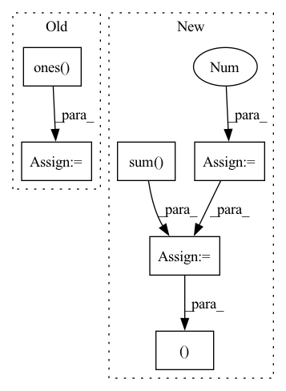

Pattern ID :40451
Before Change
edge_weights = torch.ones(edge_index.size(1), dtype=torch.int,
device=edge_index.device)
else:
edge_weights = np.ones( edge_index.shape[1], dtype=np.int)
degree = weighted_degree(index, edge_weights, num_nodes=num_nodes)
return edge_index, edge_weights / degree[index]
After Change
if backend is torch_sparse:
assert edge_weights is None
deg = edge_index.sum(dim=dim) .to(torch.float)
deg_inv = deg.pow(-1.0)
deg_inv[deg_inv == float("inf")] = 0
edge_index = deg_inv.view(-1, 1) * edge_index
return edge_index, None
index = edge_index[dim]
degree = weighted_degree(index, edge_weights, num_nodes=num_nodes)
return edge_index, edge_weights / degree[index]In pattern: SUPERPATTERN
Frequency: 3
Non-data size: 6
Instances Fragment ID: 114655664
Project Name: torchspatiotemporal/tsl
Commit Name: 50089afdf23de12eb6d11e9d5e7e64d949d45611
Time: 2022-08-18
Author: ivan.marisca@hotmail.it
File Name: tsl/ops/connectivity.py
M Class Name: AnonimousClass
N Class Name: AnonimousClass
M Method Name: normalize(4)
N Method Name: normalize(4)
M Parent Class:
N Parent Class:
M File Name: tsl/ops/connectivity.py
N File Name: tsl/ops/connectivity.py
M Start Line: 181
M End Line: 187
N Start Line: 215
N End Line: 225
Before Change
queries_per_block = min(L, 1024)
threads = queries_per_block
blocks = (L//threads) + C + 1
query_map = torch.ones( (N, H, blocks),
dtype=torch.int32,
device=Y.device) * L
blocks_map = torch.ones_like(query_map,
dtype=torch.int32,
device=Y.device) * -1 After Change
// broadcast kernel that takes advantage of clustering
// More information can be found in the cuda file
with torch.no_grad():
threads = 256
G = set_group(C, E)
group_counts = counts.view(N, H, G, -1).sum( -1)
block_counts = (group_counts + threads - 1) // threads
total_blocks = block_counts.sum().item()
indx_maps = torch.ones(
(total_blocks, 5 ),
device=X.device,
dtype=torch.int32
) Fragment ID: 114655660
Project Name: idiap/fast-transformers
Commit Name: 8e4d4469091761280523efe62ffda6277d02ce87
Time: 2020-11-25
Author: avyas@idiap.ch
File Name: fast_transformers/aggregate/__init__.py
M Class Name: AnonimousClass
N Class Name: AnonimousClass
M Method Name: clustered_broadcast(5)
N Method Name: clustered_broadcast(5)
M Parent Class:
N Parent Class:
M File Name: fast_transformers/aggregate/__init__.py
N File Name: fast_transformers/aggregate/__init__.py
M Start Line: 68
M End Line: 94
N Start Line: 72
N End Line: 109
Before Change
index = edge_index[dim]
if edge_weights is None:
if isinstance(edge_index, Tensor):
edge_weights = torch.ones( edge_index.size(1), dtype=torch.int,
device=edge_index.device)
else:
edge_weights = np.ones(edge_index.shape[1], dtype=np.int)
degree = weighted_degree(index, edge_weights, num_nodes=num_nodes)
return edge_index, edge_weights / degree[index]After Change
if backend is torch_sparse:
assert edge_weights is None
deg = edge_index.sum(dim=dim) .to(torch.float)
deg_inv = deg.pow(-1.0)
deg_inv[deg_inv == float("inf")] = 0
edge_index = deg_inv.view(-1, 1) * edge_index
return edge_index, None
index = edge_index[dim]
degree = weighted_degree(index, edge_weights, num_nodes=num_nodes)
return edge_index, edge_weights / degree[index] Fragment ID: 114655662
Project Name: torchspatiotemporal/tsl
Commit Name: f28e5a2fddc34eeb90a13c113512c8ab12b6138b
Time: 2022-07-20
Author: ivan.marisca@hotmail.it
File Name: tsl/ops/connectivity.py
M Class Name: AnonimousClass
N Class Name: AnonimousClass
M Method Name: normalize(4)
N Method Name: normalize(4)
M Parent Class:
N Parent Class:
M File Name: tsl/ops/connectivity.py
N File Name: tsl/ops/connectivity.py
M Start Line: 181
M End Line: 187
N Start Line: 215
N End Line: 225